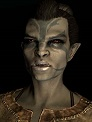
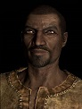

Playable Races
There are ten playable races in Skyrim, who will make up the majority of the player's NPC interaction. Each race has its own unique strengths, abilities and powers.
- Altmer

-
More commonly known as High Elves, Altmer are are a tall, golden-skinned, pointy-eared race and the most strongly gifted in the
arcane arts of all the races. The "High" in High Elf is is often understood to mean proud or snobbish, as the Altmer generally
personify these characteristics, referring to other races as "lesser" and believing themselves to be direct descendants of gods.
They are often the subject of racism and discrimination due to their affiliation with the Thalmor. In Skyrim, Almter are given
bonuses to all skills governed by the school of magic, they have have a larger pool of magic than other races and the ability to
briefly regenerate magic more quickly. Although it has no effect on the game, Altmer can live over three times as long as non-elf
races (around 300 years).
- Argonian

-
Argonians are oviparous, humanoid, reptilian natives of swampland. They possess a wide variety of unique aesthetic features including
scales, spikes, horns, ridges, feathers, sharp teeth and claws, fins, gills, and a tail. Gills allow Argonians to be the only race
which can breath under water. On top of water breathing, in Skyrim, Argonians are 50% more resistant to poison and diseases than
most other races, deal more unarmed damage than other races, exhibit bonuses to Lockpicking,
Alteration, Light Armor,
Pickpocket, Restoration and Sneak, and are given an ability to briefly regenerate health, effectively making them briefly invincible.
- Bosmer
-
More commonly known as Wood Elves, Bosmer are shorter and have light-brown skin and pointy ears. Rejecting the formalities of the
civilized world, the Bosmer discarded lavish living for a life in the wilderness, among nature and animals. In fact, their major
cities are actually located in giant walking trees that roam the forest of their homeland, and they paint their bodies to resemble
their forest surroundings. Because of this, many view them as barbarians. Bosmer are known to be extremely agile, quick and
resilient. In Skyrim, Bosmer are given bonuses to Archery,
Alchemy, Light Armor, Lockpicking,
Pickpocket and Sneak, they are 50% more resistant to poison and disease and they have an
ability to briefly turn a wild animal into an ally. Like Altmer, Bosmer can also live to be 300 years old.
- Breton
-
A race of both human and elven ancestry, Breton are considered one of the more intelligent races, known for a proficiency in
abstract thinking as well as their adeptness in the magical arts. Aside from their known, mixed heritage, Bretons have almost
no distinguishable features from those of the other human races. In Skyrim, Breton are given bonuses to
Conjuration, Alchemy, Alteration,
Illusion, Restoration and Speech, they are 25% resistant
to all magic and they have an ability to briefly absorb and reuse 50% of the magic from spells cast upon them.
- Dunmer
-
More commonly referred to as Dark Elves, Dunmer are of average height, possess very dark gray (sometimes greenish or blue) skin,
pointy ears, and glowing red eyes and like their elven cousins, Dunmer can live to be 300 years old. Dunmer are known to be strong,
intelligent, quick, aloof, and reserved; mostly keeping to themselves. They harbor a natural, bitter distrust and disdain for all
races, including other Dunmer. Dunmer are noted for their skill with a balanced integration of the sword, the bow and destruction
magic. In Skyrim, Dunmer are given bonuses to most skills governed by the school of magic as
well as Light Armor and Sneak, they are 50% resistant to
fire and they have an ability which briefly causes all enemies within close proximity to conflagrate.
- Imperial
-
Less commonly known as Cyrodiilics, Imperials are the well-educated and well-spoken natives of the civilized, cosmopolitan province
of Cyrodiil. Imperials are also known for the discipline and training of their citizen armies, and their respect for the rule of
law. Though physically less imposing than the other races, the Imperials have proved to be shrewd diplomats and traders, and these
traits, along with their remarkable skill and training as light infantry, have enabled them to subdue all the other nations and
races under one Empire. In Skyrim, Imperials are given bonuses to Restoration,
Block, Destruction, Enchanting,
Heavy Armor and One-handed, they find slightly more currency when looting anything (or
anyone), and they have an ability to briefly, outright pacify an enemy.
- Khajiit
-
The Khajiit are a race of feline humanoids of average height, and well-known for their keen intelligence and agility. While these
traits make them superb thieves, acrobats and warriors, they struggle greatly attempting to use magic. In Skyrim, Kahjiit are given
bonuses to Sneak, Alchemy,
Archery, Lockpicking, One-handed, and
Pickpocket. Their claws allow them to do additional unarmed damage and they are given a power to briefly improve their vision
in darkness.
- Nord
-
Natives of Skyrim, Nords are tall, fair-skinned and fair-haired humans known for their physical size and strength, great
resistance to cold and frost magic, uncompromising mindset in the face of adversity and strong cultural background focusing on
honor, glory, family and community. Nords excel as warriors. In Skyrim, Nords are given bonuses to
Two-Handed, Block, Light Armor,
One-handed, Smithing and Speech, they are 50% more
resistant to frost magic than other races, and they have an ability to briefly cause everyone around them to flee.
- Orc 
-
Less commonly known as Orsimer, Orcs are actually cousins of the Elf races, but lack any magical affinity and have a life span
similar to humans. With skin tones ranging from light green to dark brown, a heavily muscular frame, and considerable stature the
Orc stand apart amongst Men and Elves. Orc armorers are prized for their craftsmanship, and Orc warriors in heavy armor are among
the finest in the Empire. Orc's warrior status is complimented by a deeply ingrained warrior culture, although their society is
viewed by the other races as unnecessarily rough and cruel. In Skyrim, Orcs ar given bonuses to
Heavy Armor, Block, Enchanting,
One-handed, Smithing, and Two-handed, and they have an
ability which allows them to briefly take 50% less physical damage while dealing 100% more physical damage.
- Redguard
-
Redguards are humans of average height, dark-skin, muscular build, and wiry-hair. They are renowned as arguably the most fierce,
versatile and naturally gifted warriors in all of the Empire. The Redguard's innate agility and prolific level of endurance allows
them to excel in all areas of physical activity. They are likewise blessed with a very hardy constitution that allows them to
resist poison and disease. In Skyrim, Redguards are given bonuses to One-Handed,
Alteration, Archery, Block,
Destruction and Smithing, they have are 50% resistant to poison and they have an ability
which briefly regenerates their stamina, allowing them to briefly ignore the normal stamina requirements for using weapons.
Dragons
Creatures
Beyond dragons and the hundreds of NPCs who populate the land of Skyrim, there are a plethora of creatures the Dragonborn will interact with.
- Animals - Animals comprise various mundane creatures that have no magical or weapon-wielding abilities.
- Bear
- Chicken
- Cow
- Deer
- Dog
- Fox
- Goat
- Horker
- Horse
- Mammoth
- Mudcrab
- Rabbit
- Sabre Cat
- Skeever
- Slaughterfish
- Wolf
- Bristleback
- Ash Hopper
- Deadra - The Daedra are a race of powerful supernatural entities that inhabit the planes of Oblivion.
- Ash Guardian
- Flame Atronach
- Frost Atronach
- Lurker
- Seeker
- Storm Atronach
- Dwarven Automatons - Dwarven Automatons are ancient, robot-like machines encountered in Dwarven Ruins.
- Dwarven Ballista
- Dwarven Centurion
- Dwarven Sphere
- Dwarven Spider
- Monsters - Monsters are creatures with various magical abilities, ranging from magical attacks to various magical resistances.
- Chaurus
- Flamer
- Fire Wyrm
- Frostbite Spider
- Gargoyle
- Giant
- Hagraven
- Ice Wraith
- Magic Anomaly
- Mudcrab
- Netch
- Riekling
- Spiders
- Spriggan
- Troll
- Werewolf
- Wisp
- Passive Creatures - Passive creatures are completely unable to attack or harm you.
- Abacean Longfin
- Ancestor Moth
- Ants
- Bats
- Bees
- Blue Butterfly
- Birds
- Bone Hawk
- Dragonfly
- Felsaad Tern
- Hawk
- Luna Moth
- Monarch Butterfly
- Shellbug
- Silt Strider
- Torchbug
- Whispering Spirit
- Undead - Undead creatures consist of spirits, reanimated skeletons, and reanimated corpses.
- Ash Spawn
- Dragon Priest
- Draugr
- Ghost
- Skeleton
- Zombie
- Vampire